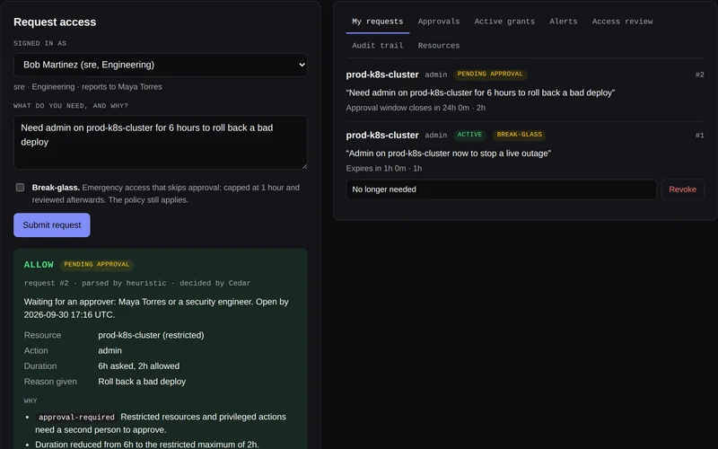
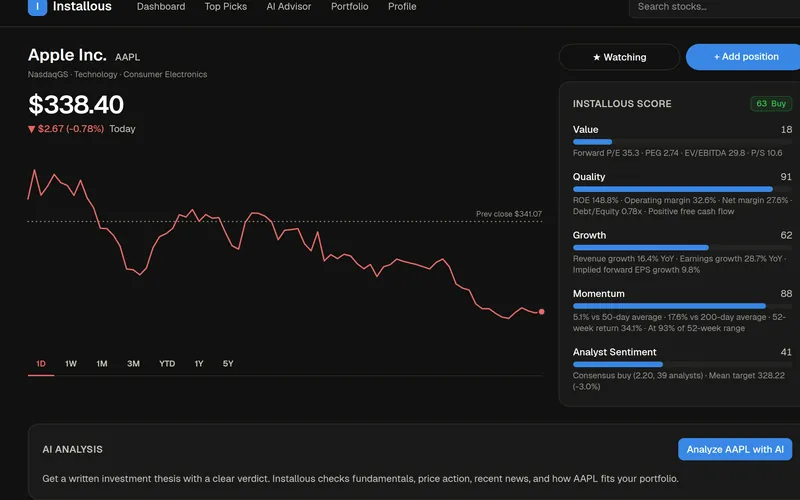
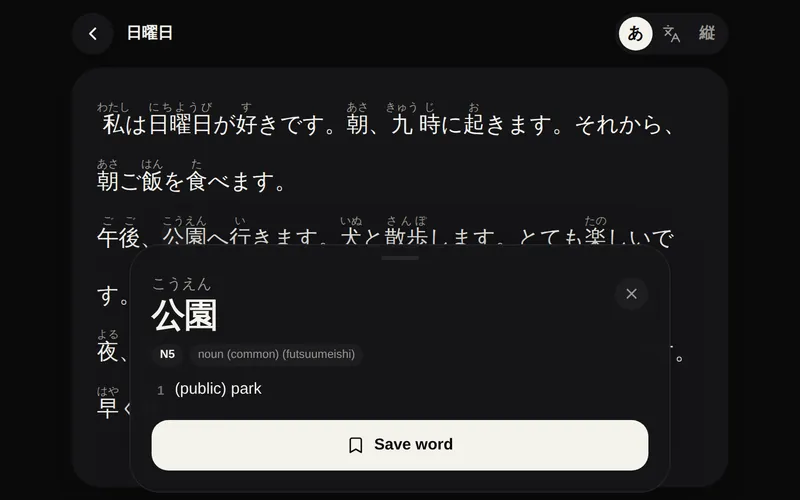
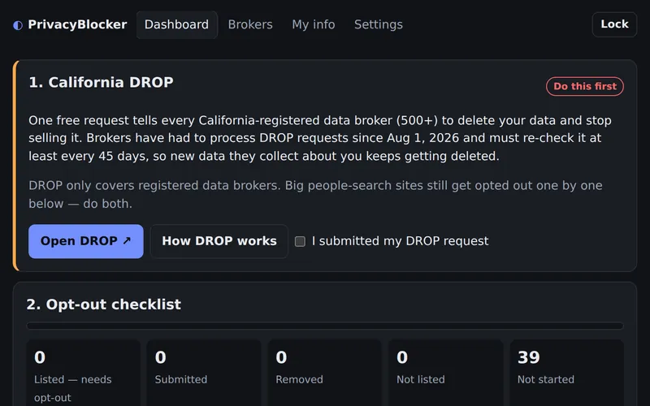
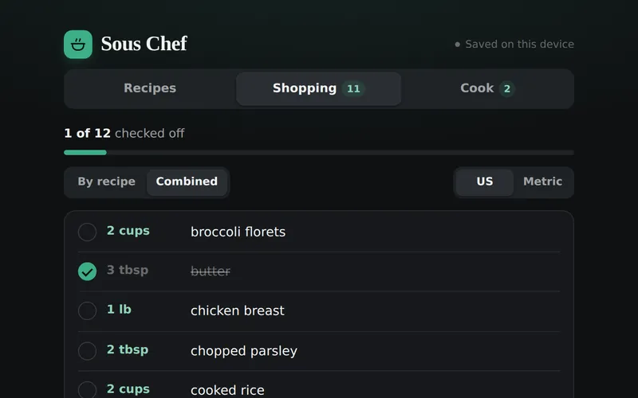

Open to full-time roles · Sacramento / Remote
Vincent Lam Software Engineer
Full-stack development, databases, and automation.
About Me
I build full-stack software with a focus on security and privacy, shaped by years of handling sensitive records and data in California state government.
Experience & Education
- Sept 2026 – Present Office Technician (Typing) Office of Legislative Counsel
- Summer 2025 B.S. Computer Science Sacramento State University
- Jan 2025 – June 2025 Student Assistant, Public Hospital Redirection Payments & Veterans Homes Programs California Department of Health Care Services
- Nov 2022 – April 2024 Student Assistant, SharePoint Program & Records Support California Department of Health Care Services
- May 2022 – Oct 2022 Student Assistant, Loan Operations & Data Quality California Housing Finance Agency
Languages
Web & backend
Security
AI & automation
Tools & OS
GitHub Activity
My Projects
Aegis
Just-in-time access, decided by policy
Personal

A just-in-time IAM engine. People ask for temporary access in plain English, Claude turns the request into an attribute-based policy, and the Cedar policy engine allows or denies it. Risky access waits for a second approver, grants revoke themselves when they expire, and every step goes into an HMAC hash-chained audit trail.
Installous
AI stock research app
Personal

A personal investing assistant with live market data, a five-factor stock score (value, quality, growth, momentum and analyst sentiment), Robinhood-style charts, and a Claude-powered advisor that calls live tools for quotes, fundamentals and news.
Nagare
Japanese reader that teaches as you read
Personal

Import a .txt or .epub, toggle furigana, and tap any word for its reading, meaning and JLPT level. Text is tokenized in the browser with kuromoji.js against a JMdict-derived dictionary of 22k common words, with saved words kept in IndexedDB.
Privacy Blocker
Get your personal data off data brokers
Personal

A local-first tool for California's data-broker opt-outs: an encrypted in-browser vault (AES-256-GCM), step-by-step tracking for about 40 people-search sites, CCPA request emails, and a scheduled GitHub Actions job that emails brokers for you.
Sous Chef
Meal planner and shopping list
Personal

Plan the week's recipes and get one shopping list: servings scaling, US and metric conversion, combined or per-recipe lists, and AI recipe import from a web search, a link or pasted ingredients.
Project: W.E.M.U 2.0
License and forms system for a state department
Senior Project
Built for the Department of Consumer Affairs to manage 3.4 million licenses and forms, streamlining updates across test, development, and production.
Movie Recommendation Service
REST API and web app
Team Project
Full CRUD REST API and front-end movie recommendation app, built with a team using Scrum methodology.
Get In Touch
I'm always interested in new opportunities and collaborations - reach out any time.